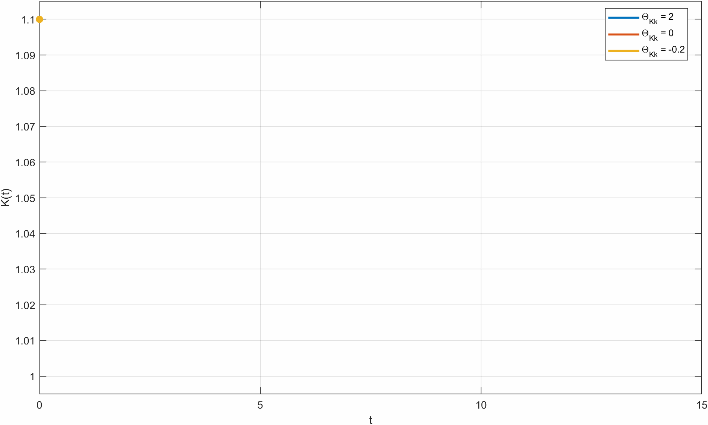
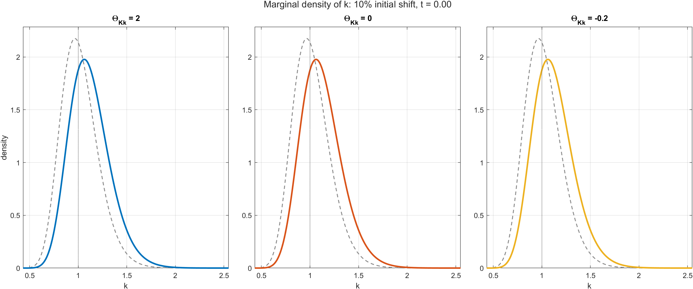

Discussion of
Strategic Complementarity = Persistence in Linear-Quadratic Mean Field Games
Fernando Alvarez, David Argente, and Thomas Sargent
Jonathan J. Adams, FRB of Kansas City
Cowles Conference on Macroeconomics, Yale SoM
June 4, 2026
The views expressed are those of the author and do not necessarily reflect the positions of the Federal Reserve Bank of Kansas City or the Federal Reserve System.
Why You Should Care
Clear lesson in the title: strategic complementarity slows the speed of convergence
Linear-quadratic representation gives a clean solution with perfect aggregation + finite-dimensional state space
Strategic complementarity changes the planner’s solution relative to the decentralized equilibrium
An argument for future econometrics: strategic complementarity cannot be identified from cross-sectional data alone; aggregate time series are necessary
Many other valuable results, methods, extensions
Solution Map
Step 1: Fix \(X(t)\)
\[ \begin{aligned} \rho u(x,t) &= -\frac{1}{2}x'Qx - X(t)'\Theta x + H(u_x,x) \\ &\quad + \frac{1}{2}\operatorname{tr}(\Sigma u_{xx}) + u_t(x,t) \end{aligned} \]
\[ H(u_x,x) = -\frac{1}{2}\alpha^{*'}\Gamma\alpha^* + u_x'(B\alpha^* - Ax) \]
\[ \alpha^* = \Gamma^{-1} B' u_x \] Conjecture quadratic solution: \[ u(x,t) = \beta_0(t) + \beta_1(t)'x + \frac{1}{2}x'\beta_2(t)x \]
Step 2: Solve \(\beta_2 \rightarrow (\beta_1, X) \rightarrow \beta_0\)
Solve Riccati: \[ %\dot{\beta}_2 0 = Q - \beta_2 B \Gamma^{-1} B' \beta_2 + \beta_2 A + A'\beta_2 + \rho \beta_2 \]
Solve system: \[ \begin{aligned} \begin{bmatrix} \dot{\beta}_1 \\ \dot{X} \end{bmatrix} &= \begin{bmatrix} \rho I_n + A' - \beta_2 B \Gamma^{-1} B' & \Theta' \\ B\Gamma^{-1}B' & B\Gamma^{-1}B'\beta_2 - A \end{bmatrix} \begin{bmatrix} \beta_1 \\ X \end{bmatrix} \end{aligned} \]
Solve ODE: \[ \dot{\beta}_0 = \rho \beta_0 - \frac{1}{2}\beta_1' B \Gamma^{-1} B' \beta_1 - \frac{1}{2}\operatorname{tr}(\Sigma \beta_2) \]
Perfect aggregation:
agent’s drift is \(\mu(x,t) = (B\Gamma^{-1}B'\beta_2 - A)x + B\Gamma^{-1}B'\beta_1\)
aggregate drift is \(\dot{X} = (B\Gamma^{-1}B'\beta_2 - A)X + B\Gamma^{-1}B'\beta_1\)
Perfect aggregation \(\implies\) finite-dimensional state space \(\implies\) + linearity = tractable \(\implies\) theorems
Arbitrary matrices + light conditions \(\implies\) generality (to an extent)
How the Paper Handles Risk
In the benchmark MFG, idiosyncratic risk enters through a constant diffusion matrix \(\Sigma\):
\[ dx = (B\alpha - Ax)dt + \Sigma^{1/2} dW \]
\[ \rho u(x,t) = \cdots + \frac{1}{2}\operatorname{tr}(\Sigma u_{xx}(x,t)) + u_t(x,t) \]
In the industry example, risk is state-dependent before approximation:
\[ dk = i - \delta k + k\bar{\sigma} \, dW \]
\[ \rho \tilde v(k,t) = \cdots + \frac{k^2 \bar{\sigma}^2}{2}\tilde v_{kk}(k,t) + \tilde v_t(k,t) \]
Then the LQ approximation flattens that term to a constant coefficient:
\[ \rho u(x,t) = \cdots + \frac{(\bar{\sigma}/\bar{k})^2}{2}u_{xx}(x,t) + u_t(x,t) \]
Risk Does Not Affect Decisions
Step 1: Fix \(X(t)\)
\[ \begin{aligned} \rho u(x,t) &= -\frac{1}{2}x'Qx - X(t)'\Theta x + H(u_x,x) \\ &\quad + \frac{1}{2}\operatorname{tr}({\color{red}\Sigma} u_{xx}) + u_t(x,t) \end{aligned} \]
\[ H(u_x,x) = -\frac{1}{2}\alpha^{*'}\Gamma\alpha^* + u_x'(B\alpha^* - Ax) \]
\[ \alpha^* = \Gamma^{-1} B' u_x \] Conjecture quadratic solution: \[ u(x,t) = {\color{red}{\beta_0}}(t) + \beta_1(t)'x + \frac{1}{2}x'\beta_2(t)x \]
Step 2: Solve \(\beta_2 \rightarrow (\beta_1, X) \rightarrow \beta_0\)
Solve Riccati: \[ 0 = Q - \beta_2 B \Gamma^{-1} B' \beta_2 + \beta_2 A + A'\beta_2 + \rho \beta_2 \]
Solve system: \[ \begin{aligned} \begin{bmatrix} \dot{\beta}_1 \\ \dot{X} \end{bmatrix} &= \begin{bmatrix} \rho I_n + A' - \beta_2 B \Gamma^{-1} B' & \Theta' \\ B\Gamma^{-1}B' & B\Gamma^{-1}B'\beta_2 - A \end{bmatrix} \begin{bmatrix} \beta_1 \\ X \end{bmatrix} \end{aligned} \]
Solve ODE: \[ \color{red}{\dot{\beta_0}} = \rho {\color{red}{\beta_0}} - \frac{1}{2}\beta_1' B \Gamma^{-1} B' \beta_1 - \frac{1}{2}\operatorname{tr}({\color{red}\Sigma} \beta_2) \]
Constant coefficient risk \(\Sigma\) only affects the level of the value function \(\beta_0\)
No effect on decisions \(\alpha^* = \Gamma^{-1} B' (\beta_1 + \beta_2 x)\)
\(\implies\) heterogeneity is uninteresting
… but this simplification is unnecessary!
Solution Map with \(\color{blue}{S(x)}\)
Step 1: Fix \(X(t)\)
\[ \begin{aligned} \rho u(x,t) &= -\frac{1}{2}x'Qx - X(t)'\Theta x + H(u_x,x) \\ &\quad + \frac{1}{2}\operatorname{tr}({\color{blue}{S(x)S(x)'}} u_{xx}) + u_t(x,t) \end{aligned} \]
\[ H(u_x,x) = -\frac{1}{2}\alpha^{*'}\Gamma\alpha^* + u_x'(B\alpha^* - Ax) \]
\[ \alpha^* = \Gamma^{-1} B' u_x \]
Conjecture quadratic solution:
\[ u(x,t) = \beta_0(t) + \beta_1(t)'x + \frac{1}{2}x'\beta_2(t)x \]
Step 2: Solve \(\beta_2 \rightarrow (\beta_1, X) \rightarrow \beta_0\)
Solve generalized Riccati:
\[ 0 = Q - \beta_2 B\Gamma^{-1}B'\beta_2 + \beta_2 A + A'\beta_2 + \rho \beta_2 - {\color{blue}{\xi_2(\beta_2)}} \]
Solve system:
\[ \begin{aligned} \begin{bmatrix} \dot{\beta}_1 \\ \dot{X} \end{bmatrix} &= \begin{bmatrix} \rho I_n + A' - \beta_2 B\Gamma^{-1}B' & \Theta' \\ B\Gamma^{-1}B' & B\Gamma^{-1}B'\beta_2 - A \end{bmatrix} \begin{bmatrix} \beta_1 \\ X \end{bmatrix} - \begin{bmatrix} {\color{blue}{\xi_1(\beta_2)}} \\ 0 \end{bmatrix} \end{aligned} \]
Solve ODE:
\[ \dot{\beta}_0 = \rho \beta_0 - \frac{1}{2}\beta_1' B\Gamma^{-1}B'\beta_1 - \frac{1}{2}{\color{blue}{\xi_0(\beta_2)}} \]
Generalize: \(dx = (B\alpha - Ax)dt + \color{blue}{S(x)} \, dW\)
Assume \(\color{blue}{S(x)} = S_0 + \color{blue}{S_1} x\); the HJB will remain quadratic in \(x\)
\(\frac{1}{2}\operatorname{tr}(\color{blue}{S(x)S(x)'}\beta_2) = \frac{1}{2}x'\color{blue}{\xi_2(\beta_2)}x + \color{blue}{\xi_1(\beta_2)'}x + \frac{1}{2}\color{blue}{\xi_0(\beta_2)}\), where \(\xi_j\) are linear in \(\beta_2\)
So risk now enters \(\beta_2\), then \((\beta_1, X)\), then \(\beta_0\)
Hence risk can affect \(\color{blue}{\alpha^*} = \Gamma^{-1} B' \color{blue}{u_x}\). Success!
What Other Generalizations are Valuable?
What would it take to solve Aiyagari with a keeping-up-with-the-Joneses incentive?
Capital drift
GE prices
Period return
Borrowing constraint
\(dk = \big(R(t)k + W(t)e^z - c\big)dt\)
\(R(t) = \alpha A K(t)^{\alpha - 1} \qquad W(t) = (1-\alpha) A K(t)^{\alpha}\)
\(u(c, C(t))\)
\(k \ge 0\)
Aggregate state \(X\) needs to enter the drift
Aggregate control \(C\) needs to enter the period return
Allow for finite boundaries (e.g. borrowing constraints, \(sS\) regions, irreversibility, etc.)
Some of these work
Solution Map with \(\color{purple}{G X}\) in Drift
Step 1: Fix \(X(t)\)
\[ \begin{aligned} \rho u(x,t) &= -\frac{1}{2}x'Qx - X(t)'\Theta x + H(u_x,x,X) \\ &\quad + \frac{1}{2}\operatorname{tr}(\Sigma u_{xx}) + u_t(x,t) \end{aligned} \]
\[ H(u_x,x,X) = -\frac{1}{2}\alpha^{*'}\Gamma\alpha^* + u_x'(B\alpha^* - Ax - {\color{purple}{G X}}) \]
\[ \alpha^* = \Gamma^{-1} B' u_x \]
Conjecture quadratic solution:
\[ u(x,t) = \beta_0(t) + \beta_1(t)'x + \frac{1}{2}x'\beta_2(t)x \]
Step 2: Solve \(\beta_2 \rightarrow (\beta_1, X) \rightarrow \beta_0\)
Solve Riccati:
\[ 0 = Q - \beta_2 B\Gamma^{-1}B'\beta_2 + \beta_2 A + A'\beta_2 + \rho \beta_2 \]
Solve system:
\[ \begin{aligned} \begin{bmatrix} \dot{\beta}_1 \\ \dot{X} \end{bmatrix} &= \begin{bmatrix} \rho I_n + A' - \beta_2 B\Gamma^{-1}B' & \Theta' + {\color{purple}{\beta_2 G}} \\ B\Gamma^{-1}B' & B\Gamma^{-1}B'\beta_2 - A - {\color{purple}{G}} \end{bmatrix} \begin{bmatrix} \beta_1 \\ X \end{bmatrix} \end{aligned} \]
Solve ODE:
\[ \dot{\beta}_0 = \rho \beta_0 - \frac{1}{2}\beta_1' B\Gamma^{-1}B'\beta_1 - \frac{1}{2}\operatorname{tr}(\Sigma \beta_2) + {\color{purple}{\beta_1' G X}} \]
Generalize: \(dx = (B\alpha - Ax - \color{purple}{G X})dt + \Sigma^{1/2} dW\)
Optimal decision \(\alpha^* = \Gamma^{-1} B'(\beta_1 + \beta_2 x)\) is unchanged
\(\beta_2\) is unchanged, but the \((\beta_1, X)\) system gains \({\color{purple}{\beta_2 G}}\) and \(- {\color{purple}{G}}\), and \(\beta_0\) gains \({\color{purple}{\beta_1' G X}}\)
Solution Map with \(\color{green}{C}\) in Period Return
Step 1: Fix \(X(t)\)
\[ \begin{aligned} \rho u(x,t) &= -\frac{1}{2}x'Qx - X(t)'\Theta x + H(u_x,x,\color{green}{C}) \\ &\quad + \frac{1}{2}\operatorname{tr}(\Sigma u_{xx}) + u_t(x,t) \end{aligned} \]
\[ H(u_x,x,\color{green}{C}) = -\frac{1}{2}\alpha^{*'}\Gamma\alpha^* - {\color{green}{C'\Upsilon}}\alpha^* + u_x'(B\alpha^* - Ax) \]
\[ \alpha^* = \Gamma^{-1}(B'u_x - {\color{green}{\Upsilon'C}}) \]
Conjecture quadratic solution:
\[ u(x,t) = \beta_0(t) + \beta_1(t)'x + \frac{1}{2}x'\beta_2(t)x \]
Step 2: Solve \(\beta_2 \rightarrow (\beta_1, X) \rightarrow \beta_0\)
Solve Riccati:
\[ 0 = Q - \beta_2 B\Gamma^{-1}B'\beta_2 + \beta_2 A + A'\beta_2 + \rho \beta_2 \]
Solve system:
\[ \begin{aligned} \begin{bmatrix} \dot{\beta}_1 \\ \dot{X} \end{bmatrix} &= \begin{bmatrix} \rho I_n + A' - \beta_2 B\Gamma^{-1}B' + {\color{green}{\beta_2 M_C}} & \Theta' + {\color{green}{\beta_2 M_C \beta_2}} \\ B\Gamma^{-1}B' - {\color{green}{M_C}} & B\Gamma^{-1}B'\beta_2 - A - {\color{green}{M_C \beta_2}} \end{bmatrix} \begin{bmatrix} \beta_1 \\ X \end{bmatrix} \end{aligned} \]
Solve ODE:
\[ \dot{\beta}_0 = \rho \beta_0 - \frac{1}{2}\beta_1' B\Gamma^{-1}B'\beta_1 - \frac{1}{2}\operatorname{tr}(\Sigma \beta_2) \]
Generalize the period return to include \(-{\color{green}{C'\Upsilon}}\alpha\) where \(C\) is the aggregate control: \[C = \int \alpha(x,t) m(x,t) \, dx\]
\(\Upsilon\) represents strategic complementarity between controls
Aggregate control solves \((\Gamma + \Upsilon')C = B'(\beta_1 + \beta_2 X)\)
Define \({\color{green}{M_C}} \equiv B\Gamma^{-1}\Upsilon'(\Gamma + \Upsilon')^{-1}B'\), entering \((\beta_1,X)\) coefficients (requires invertibility)
\(\color{green}{C}\)-Complementarity is not Sufficient for Persistence
Rearrange the \((\beta_1,X)\) system, defining \(y \equiv \beta_1 + \beta_2 X\):
\[ \begin{bmatrix} \dot y \\ \dot X \end{bmatrix} = \begin{bmatrix} \rho I + A' & Q + \Theta' \\ B\Gamma^{-1}B' - \color{green}{M_C} & -A \end{bmatrix} \begin{bmatrix} y \\ X \end{bmatrix} \]
\(M_C\) drops out of most blocks
If \(Q + \Theta' = 0\) & the system is block triangular, so stable eigenvalues are independent of \(\color{green}{M_C}\) and hence \(\color{green}{\Upsilon}\)
… in which case \(\color{green}{\Upsilon}\) changes the value function but not the aggregate path \(X(t)\)
Therefore, for strategic complementarity among controls to matter, states must enter the period return (else \(Q=0\), \(\Theta=0\))… why??
\(\implies\) I’ll rewrite Aiyagari utility to depend on relative wealth: \(u(c,C)\to u(c,k,K)\)
Finite Boundaries
… I couldn’t get it to work.
How to embed in LQ framework while maintaining finite-dimensional state space?
Density at the boundary enters the law of motion for \(X\), and evolution of density at the boundary requires solving the entire PDE
Can still linearize the KFE to make this tractable, but state space is infinite… at which point, we might as well just solve the fully linearized MFG (a la Alvarez-Lippi-Souganidis)
\(\implies\) I’ll transform the Aiyagari state variable to be unbounded (e.g. \(\log(k)\))
Aiyagari Mean Field Game
Take household states \((k,z)\) with aggregate capital \(K(t)\), where \(z\) is log labor productivity:
\[ dk = \big(R(t)k + W(t)e^z - c\big)dt \qquad dz = -\phi z\,dt + \sigma\,dW \]
Impose the borrowing constraint \(k \ge 0\), and let \(\mathcal C(k,z,t)\) denote consumption choices that keep the controlled path in the feasible set.
The Hamiltonian is a function of \((p,k,z,t)\), with utility
\[ u(c,k,K(t)) = \frac{c^{1-\gamma}}{1-\gamma} + f(k,K(t)) \]
where \(f\) is smooth near \((\bar k,\bar K)\) and captures status or other aggregate-wealth effects
\[ H(p,k,z,t) = \max_{c \in \mathcal C(k,z,t)} \left\{ u(c,k,K(t)) + p\big(R(t)k + W(t)e^z - c\big) \right\} \]
with \(R(K) = \alpha A K^{\alpha-1}\) and \(W(K) = (1-\alpha) A K^\alpha\). The HJB and KFE are
\[ \rho v(k,z,t) = H(v_k,k,z,t) - \phi z v_z(k,z,t) + \frac{\sigma^2}{2}v_{zz}(k,z,t) + v_t(k,z,t) \]
\[ m_t = -\partial_k\left(H_p(v_k,k,z,t)m\right) + \partial_z\left(\phi z m\right) + \frac{\sigma^2}{2}m_{zz} \]
\[ K(t) = \int_{k,z} k\,m(k,z,t)\,dk\,dz \]
State Complementarity and the Path of \(K\)
Initialize capital 10% above steady state
Vary the strategic complementary \(\Theta_{Kk} = - \bar{K}^2 f_{kK}\)
Thus \(f_{kK} > 0\) \(\implies \Theta_{Kk} < 0\) \(\implies\) complementarity
More complementarity \(\implies\) slower transition!

State Complementarity and the Density Path
Shock: increase all households’ wealth by 10%
Distribution \(m(\hat{k}, z)\) is Gaussian; I plot the marginal density of \(k = \bar{k}e^{\hat{k}}\) Appendix: joint density in log space

State Complementarity and the Density Path
Shock: increase all household’s wealth by 10%
Distribution \(m(\hat{k}, z)\) is Gaussian; I plot the marginal density of \(k = \bar{k}e^{\hat{k}}\) Appendix: joint density in log space

Conclusions
Strategic Complementarity = Persistence
- Crucially: complementarity among states (why not controls? dynamic vs static decision?)
Strategic Complementarity = Dynamic Externality
- Could use more discussion/intuition. I admit I don’t 100% understand why dynamic externalities are so different than static externalities. (missing market?)
Linear-quadratic structure gives a clean solution + theorems
- boundaryless state space \(\implies\) perfect aggregation \(\implies\) finite-dimensional
Much more in the paper! (higher moments, identification arguments, etc.)
My main suggestions:
- Generalize in easy + valuable ways
- More examples would be nice (probably not Aiyagari)
Additional Homework Problems
Why is the constant solution for \(\beta_2(t)\) the right solution? I follow the uniqueness argument, but would like intuition. What goes wrong with non-constant \(\beta_2(t)\)?
Maybe include the quadratic term for X; it doesn’t affect decisions but does affect \(\beta_0(t)\) and hence welfare analysis
Please provide a formalization of the approximation
Computationally, how does your LQ approximation compare to formal linearization (e.g. Alvarez-Lippi-Souganidis 2023)?
- We know what the correct solution for small shocks is. Is the LQ similar?
- Is there a shock size threshold above which LQ is more accurate than linearization?
Perfect aggregation proof can be much much simpler. Integrate the \(x\partial_t m\) and use integration by parts.
The investment example is a clear application. It’s almost too obvious an example! Adding a second, less obvious example would help sell the usefulness of the method.
The explosive complementarity case looks like endgoenous growth. A feature of a simple capital investment model even without LQ approximation (we’ll depart from steady state quickly.) Can you connect to that? (Surely someone wrote down such a model in the 1980s?)
I’m not sure it’s appropriate to conclude there there is “no equilibrium” above \(\theta^*\) threshold. There is no equilibrium with finite value function, but there is still a well-determined choice \(\alpha\) and explosive path for \(X\), no? Certainly your state is correct given your equilibrium definition, but perhaps equilibrium could be defined more broadly. Analogously: a dynamically inefficient equilibrium is still an equilibrium even though certain objects are infinite.
Are propositions 21-23 interesting? (Convince me!) Do they survive the generalizations?
Appendix: Non-Constant Risk
- Use column-wise affine diffusion loadings:
\[ dx = (B\alpha - Ax)dt + S(x) \, dW \]
Write \(S(x) = \big[s_1(x) \, \cdots \, s_m(x)\big]\) with \(s_j(x) = s_{0j} + S_j x\)
Here \(W \in \mathbb{R}^m\), \(s_j(x), s_{0j} \in \mathbb{R}^n\), and \(S_j \in \mathbb{R}^{n \times n}\), so \(\Sigma(x) = S(x)S(x)'\)
\[ \frac{1}{2}\operatorname{tr}(\Sigma(x)u_{xx}) = \frac{1}{2}\operatorname{tr}(S(x)'\beta_2 S(x)) = \frac{1}{2}\sum_{j=1}^m s_j(x)'\beta_2 s_j(x) \]
- For the quadratic ansatz, take \(\beta_2 = \beta_2'\) without loss and define
\[ \xi_2(\beta_2) \equiv \sum_{j=1}^m S_j'\beta_2 S_j, \qquad \xi_1(\beta_2) \equiv \sum_{j=1}^m S_j'\beta_2 s_{0j}, \qquad \xi_0(\beta_2) \equiv \sum_{j=1}^m s_{0j}'\beta_2 s_{0j} \]
\[ \frac{1}{2}\operatorname{tr}(\Sigma(x)\beta_2) = \frac{1}{2}x'\xi_2(\beta_2)x + \xi_1(\beta_2)'x + \frac{1}{2}\xi_0(\beta_2) \]
- So matrix-valued state-dependent risk adds explicit quadratic, linear, and constant terms to the HJB
Appendix: Approximating the Aiyagari Model 1
Follow the example: set \(\sigma = 0\) and \(z = 0\), then solve the deterministic steady state \((\bar k, \bar K, \bar c)\)
Remove the borrowing boundary by working with \(\hat{k} \equiv \log(k/\bar k)\) and \(x \equiv \begin{bmatrix} \hat{k} \\ z \end{bmatrix}\), and write the aggregate state as \(X \equiv \int x\,m(x,t)\,dx = \begin{bmatrix} X_k \\ X_z \end{bmatrix}\) with \(X_k = \log(K/\bar K)\)
First-order expand \(R(K)\) and \(W(K)\) around \(\bar K\), and second-order expand \(u(c,k,K)\) and the budget drift around \((\bar k, \bar K, \bar c, 0)\)
Since \(z\) is log productivity, \(e^z = 1 + z + o(z)\) around \(z = 0\), so the linearized labor-income loading is still \(\bar W z\)
Define the linearized control as \(\alpha \equiv (\bar c - c)/\bar k\). Then the stacked state law takes the Alvarez form
\[ dx \approx (B\alpha - A x - G X)dt + \Sigma^{1/2} dW \]
No diffusion approximation is needed here: the \(z\) process already has constant variance \(\sigma^2\)
The next slide writes the corresponding HJB, Hamiltonian, and policy rule in the paper’s notation
Appendix: Approximating the Aiyagari Model 2
Let \(\bar R \equiv R(\bar K)\), \(\bar W \equiv W(\bar K)\), \(\hat{k} \equiv \log(k/\bar k)\), \(x \equiv \begin{bmatrix} \hat{k} \\ z \end{bmatrix}\), \(\alpha \equiv (\bar c - c)/\bar k\) and write \(f_k, f_{kk}, f_{kK}\) for derivatives of \(f\) at \((\bar k,\bar K)\).
\[ dx = (B\alpha - A x - G X)dt + \Sigma^{1/2} dW \]
\[ B = \begin{bmatrix} 1 \\ 0 \end{bmatrix} \qquad A = \begin{bmatrix} -\bar R & -\bar W/\bar k \\ 0 & \phi \end{bmatrix} \qquad G = \begin{bmatrix} -\bar K\left(R_K(\bar K) + W_K(\bar K)/\bar k\right) & 0 \\ 0 & 0 \end{bmatrix} \qquad \Sigma = \begin{bmatrix} 0 & 0 \\ 0 & \sigma^2 \end{bmatrix} \]
With \(u(c,k,K) = \frac{c^{1-\gamma}}{1-\gamma} + f(k,K)\) and \(k = \bar k e^{\hat{k}}, K = \bar K e^{X_k}\),
\[ f(k,K) \approx \text{const} + \frac{1}{2}\big(\bar k f_k + \bar k^2 f_{kk}\big)\hat{k}^2 + \bar k \bar K f_{kK}\hat{k} X_k \]
up to terms that are linear in \(x\) or depend only on \(X\)
\[ Q = \begin{bmatrix} -\big(\bar k f_k + \bar k^2 f_{kk}\big) & 0 \\ 0 & 0 \end{bmatrix}, \qquad \Theta = \begin{bmatrix} -\bar k \bar K f_{kK} & 0 \\ 0 & 0 \end{bmatrix}, \qquad \Gamma = \gamma \bar k^2 \bar c^{-1-\gamma} \]
The mixed derivative \(f_{kK}\) is what feeds the Alvarez coupling matrix \(\Theta\); pure \(K\) terms only shift the scalar part of the value function
\[ \rho u(x,t) = -\frac{1}{2}x'Qx - X(t)'\Theta x + H(u_x,x,X(t)) + \frac{1}{2}\operatorname{tr}(\Sigma u_{xx}) + u_t(x,t) \]
\[ H(p,x,X) = \max_\alpha \left\{-\frac{1}{2}\Gamma\alpha^2 + p'(B\alpha - A x - G X)\right\} \]
\[ \alpha^* = \Gamma^{-1} B' p, \qquad u(x,t) = \beta_0(t) + \beta_1(t)'x + \frac{1}{2}x'\beta_2 x \]
Aggregate object: \(X(t) = \int x\,m(x,t)\,dx\), so \(X_k(t) = e_1'X(t)\).
Appendix: Linear KFE for Aiyagari
With \(\alpha^*(x,t) = \Gamma^{-1} B'\big(\beta_1(t) + \beta_2 x\big)\) the state follows \[ dx = \big(Mx + b(t)\big)dt + \Sigma^{1/2} dW \] \[ M \equiv B\Gamma^{-1}B'\beta_2 - A, \qquad b(t) \equiv B\Gamma^{-1}B'\beta_1(t) - G X(t) \]
so the KFE is
\[ m_t(x,t) = -\nabla \cdot \big((Mx + b(t))m(x,t)\big) + \frac{1}{2}\operatorname{tr}\big(\Sigma m_{xx}(x,t)\big) \]
For arbitrary initial density \(m_0(x)\), the solution is
\[ m(x,t) = \int_{\mathbb{R}^2} \mathcal{G}(x,y,t)m_0(y)\,dy \]
Here \(\mathcal{G}(x,y,t)\) is the Green’s function, that is, the conditional density of \(x_t\) at \(x\) given \(x_0 = y\). For each fixed \(t > 0\) and \(y\), it is Gaussian in \(x\) with mean \(\mu(t,y)\) and covariance \(V_t\):
\[ \mathcal{G}(x,y,t) = \frac{1}{2\pi \det(V_t)^{1/2}} \exp\!\left(-\frac{1}{2}(x-\mu(t,y))'V_t^{-1}(x-\mu(t,y))\right) \]
\[ \mu(t,y) \equiv e^{Mt}y + \int_0^t e^{M(t-s)}b(s)\,ds, \qquad V_t = \int_0^t e^{M(t-s)}\Sigma e^{M(t-s)'}\,ds \]
Appendix: Aiyagari Dynamic Distribution
- Dynamic joint distribution \(m(\hat{k}, z)\) after the 10% capital increase.
- The white \(\times\) marks the steady-state mean \((0,0)\), and the white dot marks the current center \((\hat{K}, Z)\).
- \(Corr(\hat{k}, z)<0\) if \(\bar{R} > \rho + \phi\): as \(z\) approaches a random walk (\(\phi \to 0\)), correlation with wealth decreases